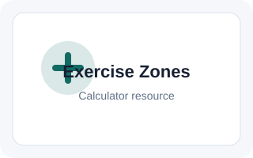

Target Heart Rate Calculator
What is heart rate
Heart rate is a measure of the number of contractions the heart makes per minute. It is measured in beats per minute (bpm). To effectively use this target heart rate calculator, it is important to understand the concepts of resting heart rate, maximum heart rate, and heart rate reserve.
Maximum heart rate
Maximum heart rate is a measure of the highest number of beats per minute the heart reaches during intense exercise. It is most accurately measured through a cardiac stress test, which typically involves exercising on a treadmill while being monitored by an electrocardiogram (ECG). As the subject walks/runs on the treadmill, the intensity is periodically increased until certain changes in heart function indicating maximum heart rate are detected. The theoretical maximum human heart rate is 300 bpm.
More commonly, maximum heart rate is estimated using various formulas. It is worth noting that maximum heart rate formulas have been criticized as inaccurate as they output generalized population averages and estimates can vary significantly from an individual's maximum heart rate. Maximum heart rate is largely correlated with age, and most formulas are primarily based on this. Thus, while they are generally useful for estimating the average maximum heart rate for a given age group, the heart rate of an individual within the age group can differ significantly. One interesting observation made by Dr. Fritz Hagerman was that the maximum heart rates of a group of men in their 20s who were on Olympic rowing teams varied between 160 and 220 beats per minute, so even at the elite level, there is significant variability.
The following are some formulas used to estimate maximum heart rate.
Haskell & Fox Formula (1971):
maximum heart rate = 220 - age
Tanaka, Monahan, & Seals Formula (2001):
maximum heart rate = 208 - 0.7 × age
Nes, Janszky, Wisloff, Stoylen, Karlsen Formula (2013):
maximum heart rate = 211 - 0.64 × age
Resting heart rate
Resting heart rate is a measure of a person's heart rate at rest, where rest is defined as when a person is awake in a neutral environment that is neither too hot nor cold, and the person is not subject to stress or surprise. It can be measured using a variety of devices or just by counting your pulse over a minute (or extrapolating it based on a shorter period, though this is less accurate).
A typical resting heart rate (RHR) for an adult ranges between 50-90 bpm. Some sources state this range as 60-100 bpm, but this range is slightly dated. A resting heart rate above the upper range is referred to as tachycardia while one below the lower range is referred to as bradycardia. A RHR in the 50-60 range in some cases may be considered bradycardia, but very fit athletes often have RHRs in this range, and sometimes even below.
Heart rate reserve
A person's heart rate reserve (HRreserve) is the difference between their maximum heart rate (MHR) and their resting heart rate (RHR):
HRreserve = MHR - RHR
For example, given a person has a maximum heart rate of 180 bpm and a resting heart rate of 68, their heart rate reserves is:
HRreserve = 180 - 68 = 112
Target heart rate zones
There are various methods used to measure intensity of exercise in relation to heart rate. Generally, the more intense the exercise, the higher the heart rate. Most methods of measuring intensity relate heart rate to various degrees of physical exertion. Maintaining a heart rate within a certain range, referred to as the target heart rate (or training heart rate range), has been found to be beneficial for exercise. If a person exercises too high above their target heart rate zone, they may expend excess energy without much benefit and risk injury and a longer recovery time. On the other hand, exercising too far below their target heart rate zone may provide little to no benefit.
A person's target heart rate zone is typically broken up into five zones which impart different benefits. The figure below depicts some guidelines for the range within which to maintain target heart rate for various exercise benefits:

Zone 1 refers to the lowest target heart rate zone (50-60%) while zone 5 refers to the 90-100% range. Generally:
Zone 1: This zone generally involves light to moderate activity and your heart rate may stay within this range during warm up, cooldown, a rest day, or an easy training day.
Zone 2: This zone is helpful for fat burning and training endurance. It is a zone that requires some effort but can still be maintained for extended periods of time.
Zone 3: This zone requires more effort to maintain and can help with building speed and strength.
Zone 4: This zone is close to your maximum effort and can help with training how long you can maintain your maximum output.
Zone 5: This zone represents your maximum effort. It is a zone that can be sustained for only a short duration. Training in this zone can help with improving muscle efficacy and improving overall cardiovascular fitness, but it should be balanced with sufficient recovery time. A person should not only train within this zone.
Each zone has its training benefits, so it is important to design your workout around these zones to best balance improvement and recovery.
Methods for measuring intensity
Because there is no consensus on how to measure intensity and there are many methods for determining target heart rate zones, our calculators allow you to select from various heart rate estimation methods as well as intensity scales.
Haskell & Fox Exercise Zone
This method for calculating target heart rate zones is one of the most straightforward and widely used methods and is based only on maximum heart rate computed using age. This is the method used by the calculator when only an age and no resting heart rate is entered. Although it is one of the most popular methods for calculating heart rate and measuring intensity due to its simplicity, it is also often inaccurate, as described in the "Maximum heart rate" section above. The formula used for determining maximum heart rate with this method is:
MHR = 220 - age
The target heart rate zone is then found by multiplying MHR by the desired percentages. For example, given that a person is 36 years old, their MHR can be calculated as:
MHR = 220 - 36 = 184
Then, if they wanted to find a target heart rate zone for moderate exercise, they would multiply this MHR by 0.70 and 0.80 to find their target heart rate in the 70-80% range:
184 × 0.70 = 129
184 × 0.80 = 147
Thus, to maintain a moderate level of exercise, they would have a target heart rate zone of 129 - 147 bpm. We can use this method to calculate any target heart rate zone. When discussing target heart rate zones, often a range of 50%-85% range is calculated.
The calculator also provides two additional formulas that estimate maximum heart rate using only age: the Tanaka, Monahan, & Seals formula and the Nes, Janszky, Wisloff, Stoylen, and Karlsen formula. These are listed in the "Maximum heart rate formulas" section above, and the method for determining target heart rate zones after finding maximum heart rate is the same.
Karvonen method
The Karvonen method calculates target heart rate zone using heart rate reserve (HRreserve), which factors in resting heart rate (RHR) on top of maximum heart rate (MHR) rather than just MHR. This is the default method used by the calculator when a resting heart rate and age are plugged in. The estimation formula and intensity scale can be adjusted with the settings at the bottom of the calculator. HRreserve can be calculated using the following formula:
HRreserve = MHR - RHR
Once HRreserve is calculated, the method for finding target heart rate zones is similar to the method described in the section above except that we multiply the selected percentage range by HRreserve rather than MHR, then add RHR to each end of the range. For example, given that we want to find the 70%-80% target heart rate zone for a 36-year-old with a resting heart rate of 70 bpm:
HRreserve = 184 - 70 = 114
HR70% = 0.70 × 114 + 70 = 150
HR80% = 0.80 × 114 + 70 = 161
Thus, their 70-80% target heart rate zone is 150-161 bpm.
Rating of perceived exertion
Rating of perceived exertion (RPE) is an indicator of exercise intensity that allows a person to subjectively rate their level of exertion while exercising. This is beneficial because it doesn't require measurement of physiological parameters such as heart rate, lactate levels, etc. Studies have shown that individuals are able to accurately estimate subjective terms like "moderate" and "intense" and exercise at the designated level.
There are two commonly used RPE scales: the Borg scale and the Borg category ratio 10 scale (Borg CR10 scale).
Borg scale:
The Borg scale is the original RPE scale and is a scale ranging from 6-20, where 6 indicates no exertion and 20 indicates maximum exertion. Also, the scale is designed such that it corresponds closely to heart rate. Each value in the scale, multiplied by 10, approximates heart rate at that given exertion level. For example, a 6 on the scale corresponds to a heart rate of 60, while a 20 corresponds to a heart rate of 200. The table below depicts the Borg scale:
| RPE scale | Intensity |
|---|---|
| 6 | No exertion at all |
| 7 | Extremely light |
| 9 | Very light |
| 11 | Light |
| 12 | Moderate |
| 13 | Somewhat hard |
| 15 | Hard |
| 17 | Very hard |
| 19 | Extremely hard |
| 20 | Maximal exertion |
Using this scale, target heart rate is calculated using the formula,
THR = RHR + (MHR - RHR) × B - 614
where:
- THR = target heart rate
RHR = resting heart rate
MHR = maximum heart rate
B = RPE scale value
For example, given a "somewhat hard" exertion which has an RPE scale value of 13, a person who has a maximum heart rate of 190 and a resting heart rate of 60 would have a target heart rate of:
THR = 60 + (190 - 60) × 13 - 614 = 125 bpm
Borg CR10 scale:
The Borg CR10 scale is the modified version of the Borg scale on a scale of 0-10. 0 represents no exertion at all while 10 represents the strongest exertion an individual has experienced. The Borg CR10 scale is as follows:
| RPE scale | Intensity |
|---|---|
| 0 | No exertion |
| 0.5 | Noticeable |
| 1 | Very light |
| 2 | Light |
| 3 | Moderate |
| 4 | Somewhat difficult |
| 5 | Difficult |
| 7 | Very difficult |
| 9 | Almost maximal |
| 10 | Maximal |
Using this scale, the target heart rate can be calculated using the formula,
THR = RHR + (MHR - RHR) × B10
where:
- THR = target heart rate
RHR = resting heart rate
MHR = maximum heart rate
B = RPE scale value
For example, given a "somewhat difficult" exertion which has an RPE scale value of 4, a person who has a maximum heart rate of 190 and a resting heart rate of 60 would have a target heart rate of:
THR = 60 + (190 - 60) × 410 = 112 bpm